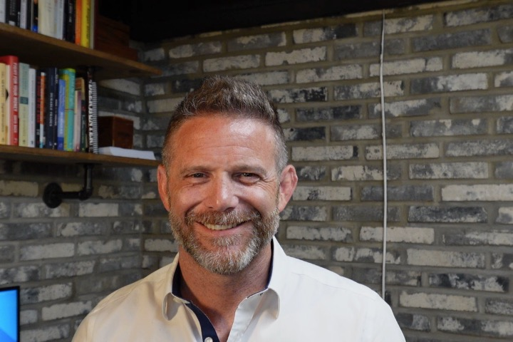

About
Human-first, on purpose.
We build AI that makes people more capable — never obsolete. Here's what we believe, and the operator behind it.
The Manifesto
For years, capability kept getting cheaper for the companies that needed it least.
A Fortune 500 can buy any system on earth. The bakery, the machine shop, the med spa, the roofing crew — the businesses that hold every town together — got the leftovers. Templates. Subscriptions. A chatbot that couldn't answer the phone.
That's the part that bothered me. So we're fixing it.
For the first time, a small team with the right tools can build what only giants could afford two years ago. Most owners just haven't been told yet.
Vision Genesis is a firm — not an app, not a course, not a guru funnel. Veteran operators who've owned a P&L, run a floor, and made payroll, paired with builders who are AI-native the way I'm spreadsheet-native.
The operator finds the truth. The builder customizes your instance of Norris. Norris keeps it running overnight.
When we build for you, it's built around your business — not the other way around. Your data stays yours. Truth first, then action — in that order.
— Ryan Dix · Vision Genesis AI · Knoxville, Tennessee
The Operator
Ryan Dix.

FounderI've spent two decades watching good businesses bleed time and margin in places their owners couldn't quite see — not because they missed it, but because they were too close to the work to step back and look. That gap is the whole reason this firm exists.
I spent nearly 20 years running large-scale finance and operations at two best-in-class companies — ExxonMobil and Iron Mountain — building teams, leading transformations, and managing through crises across four continents. Before the Fortune-50 work, I built my own things: an e-commerce company I ran for four years, and a Knoxville restaurant I owned for two. One's a credential. The other folded, like restaurants do. I keep them both — the pattern recognition you build watching a business actually live or die is different from anything you learn inside an enterprise.
In late 2025 I started building Vision Genesis: a fully autonomous AI agent system, grounded in human-first ethics, running 24/7 on local infrastructure. Not a demo. Not a prototype. The live operating system that lets one small firm do the work of a large one — the capability that became Norris, what we now install in our clients' businesses.
I came to this from an unusual bench. I studied Religion at Carson-Newman, was a youth minister at Russellville Baptist Church outside Morristown, Tennessee, and attended seminary at Wake Forest's Divinity School on a fully funded fellowship — before the calling pointed somewhere different. My faith, as imperfect as it is, is central to my life. Over the years I've worshipped across six traditions — Baptist, Methodist, Lutheran, Presbyterian, Episcopal, and nondenominational — and today my family is at Cedar Springs Presbyterian here in Knoxville. The owners and organizations I'm building for aren't faceless logos with eight-figure software budgets. They're the people I see at church and at my kids' football games.
I didn't build it for fun. I built it on a conviction: AI should empower people, not devalue them — and the AI that assists us should be trained on and grounded in human-first ethics.
How the firm is built
Veteran business operators, paired with technology-native builders — inside the Norris infrastructure that does the rest.
That's the whole model. The operator holds the judgment. The builder deploys. Norris carries the load that doesn't need a human in the loop. It's how we deliver blue-chip results without Fortune 500 prices.
Straight answers
My top five questions.
The things owners actually ask me, answered the way I'd answer them across the table.
01Is this going to replace my people?
No — and if a vendor's pitch is "fire half your team," walk away. We build AI that takes the work nobody wanted: the after-hours questions, the quote math, the follow-ups that slip. Your people get to do the part that needs a human.
02How is this different from the chatbot everyone's selling?
A chatbot recites a script and hits a wall. Norris does the work. You decide which actions it's allowed to take — and within those guardrails it acts on your behalf, not just answers. It learns your business and gets sharper every day; the difference shows up in month two, when it's handling things you never thought to program.
03Will it touch my private data?
Norris has a public voice and a private cockpit, cleanly separated. The public voice — what your customers talk to — works off your public information only, never your internal docs, email, or books. The private side only ever sees what you deliberately hand it. The same way you run your business now.
04I'm not technical. Can I actually run this?
Yes. It's built for owners, not engineers — teach it, correct it, and steer it in plain language. And for the heavier lifts, an operator and a builder are in it with you. You're never handed a login and left alone.
05Why should I trust a firm this young?
Because the operating judgment isn't young. It's multiple decades across Fortune 500 businesses and startups that have both succeeded and failed. And everything in this space is brand new — small and agile is exactly what you want right now, unless you'd rather wait to move while your competitors pull ahead. We run this exact system inside our own firm before we ever install it in yours.
Want to work with us?
Operators and AI-native builders — we should talk.
If you've run real businesses, or you build at the speed of this technology, there's a place for you here.
vision@visiongenesisai.com